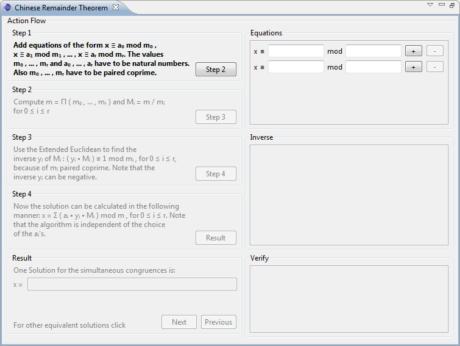
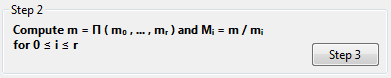
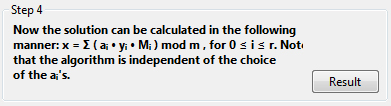
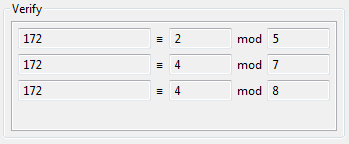

This plug-in shows the functioning of the Chinese Remainder Theorem (CRT).
The CRT plug-in can be started on the menu visualization and it can maximize its view.
The plug-in consists of two columns. On the left side the description and the computational procedure of the current step is presented, and on the right side the input and results of the calculation. In the Equation group on the right side of the plug-in the parameters of the equation can be entered.

Whole, positive numbers (integers) of any size can be used. By pressing the + button the number of the equations can be increased and it can be reduced by the pressing the - button. The minimum number of equations is two. After determining the number of equations and entering the parameters, you can move to the next step by pressing the Step 2 button.

If the input parameters of the equations was not correct, a dialog box opens where the user can correct the entry.

The user has the possibility to correct his input themselves or allow the program by clicking the button Suggestion to propose a valid value. In both cases the user has to confirm with the Apply button. With the OK button the user returns to the program and the dialog box closes. The group Step 2 is activated and the computational procedure is emphasized.
The user can now move on to the third step by pressing the button Step 3. In the group Inverse the intermediate results of the calculations are shown.

The accompanying explanation has previously been given in Step 2 group. Step 3 describes the calculation of the inverse element.

The next step is then shown in Step 4 in the Inverse group.

The calculation of the final result is described in the last step, Step 4.
The final result can now be displayed in the group Result by pressing the buttons Result.

For the user to verify the accuracy of the solution all the equations are shown again in the Verify group.
The user can display further solutions of the simultaneous congruences by clicking the Next and Previous buttons. The solutions are shown in the Result as well as in the Verify group. To initiate a new calculation, it is sufficient to click in the Equation group on the + or - button. This performs a reset of all the input fields besides the ones in the Equation group, and you can add or remove other equations. This reset is possible from any step.
After passing through the algorithm, it is possible to export the calculations. The plug-in supports the output as LaTeX, PDF or CSV file.